AnyPortrait > 메뉴얼 > URP 외곽선 쉐이더 만들기
URP 외곽선 쉐이더 만들기
1.3.5
AnyPortrait의 재질 라이브러리 기능을 이용하면, 다양한 쉐이더를 적용할 수 있습니다.
유니티의 URP(Universal Render Pipeline)와 같은 다른 렌더링 파이프라인도 지원하기 때문에 다양한 기법을 시도해볼 수 있는 장점을 가집니다.
이 페이지는 사용자의 요청으로 URP 환경에서 캐릭터의 외곽선을 그리는 기법을 구현하는 과정을 설명합니다.
URP의 특징과 한계점, 그리고 AnyPortrait와 같이 "Transparent 재질"을 가진 여러개의 메시들이 렌더링되는 시스템의 특징에 대해 어떤 고민을 하고 구현을 했는지를 볼 수 있습니다.
이 과정을 통해서 외곽선 및 다양한 다른 기법들을 구현하는데 도움이 되기를 바랍니다.
이 페이지를 읽기에 앞서서, 다음의 페이지를 먼저 읽어보실 것을 권장합니다.
- 재질 라이브러리
- Universal Render Pipeline 연동하기
- Shader Graph로 재질 작성하기
외곽선 렌더링을 구현하기 위한 접근법
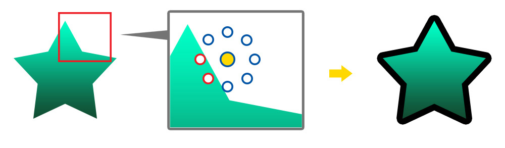
외곽선 쉐이더를 구현하는 다양한 방법이 있지만, 여기서는 투명도를 비교하는 간단한 방법을 이용합니다.
렌더링되는 어떤 픽셀이 다음의 조건들을 만족한다면, 그 픽셀은 "외곽선"에 해당한다고 볼 수 있습니다.
- 렌더링되는 픽셀 색상은 투명해야합니다.
- 주변의 다른 픽셀들 중에서 투명하지 않은 픽셀이 있어야 합니다.
위와 같이 텍스쳐의 색상을 샘플링할 때, 주변의 투명도를 같이 샘플링하는 방법을 통해서 외곽선이 그려져야할 부분을 쉽게 찾을 수 있습니다.

이 기법을 바로 쉐이더로 적용하면 위와 같은 문제를 만나게 됩니다.
왼쪽은 한개의 메시, 주로 Sprite Renderer에서의 외곽선의 모습입니다.
정상적으로 외곽선이 그려지는 것을 볼 수 있습니다.
하지만 오른쪽의 경우, 즉 AnyPortrait로 만들어진 캐릭터에 해당 쉐이더를 적용하면 이상한 결과를 볼 수 있습니다.
내부의 각각의 메시들에도 외곽선이 생성되어버린 것입니다.

AnyPortrait와 같이 여러개의 메시들을 가진 경우엔 단순하게 쉐이더 하나로 정상적인 외곽선을 추출할 수 없습니다.
이것은 다른 2D 에셋이나, 여러개의 메시들을 가진 3D 캐릭터도 동일하게 겪을 수 있습니다.
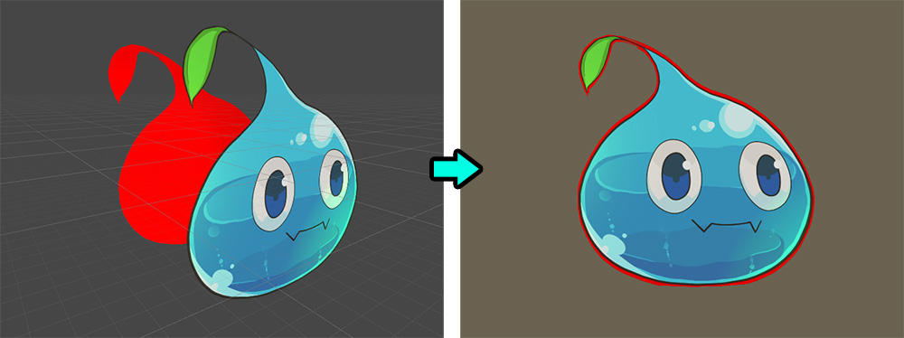
그래서 이 문제를 해결하는 가장 간단한 방법은 약간 뒤쪽에 동일한 캐릭터를 배치하여 렌더링을 하는 것입니다.
이 방법은 가장 직관적이며, Post Processing을 사용하지 않는한 2D, 3D에서 모두 보편적으로 사용되는 방식입니다.
이 접근법을 구현하기 위해서는 다음의 방법들이 고려될 수 있습니다.
1. 캐릭터를 복제하여 뒤에 배치하거나 먼저 렌더링되도록 만든 후, 원본과 동일하게 움직이는 방법
2. "멀티 패스 렌더링(Multi-Pass Rendering)"을 이용해서 캐릭터 하나가 두번 렌더링되도록 만드는 방법
물론 1의 방법이 가장 편리한 방법일 것입니다.
만약 이 방식으로 구현하고자 한다면 AnyPortrait의 동기화 기능이 도움이 될 것입니다.
이 페이지에서는 2의 접근법을 구현해볼 것입니다.
캐릭터를 복제하지 않기 때문에 CPU 자원을 소모하지 않아도 되며, 동기화되지 않은 움직임에 의해서 발생하는 문제를 예방할 수 있어서 가장 좋은 선택일 것입니다.
안타까운 점은, URP와 같은 SRP에서는 기본 렌더링 파이프라인과 달리, 멀티 패스 렌더링을 기본적으로 지원하지 않는다는 것입니다.
따라서 URP 환경에서는 "스텐실(Stencil)"과 "LightMode"를 이용하여 멀티 패스를 재현하는 방법을 이용할 것입니다.
참고 1
저희의 테스트에서는 구형의 안드로이드 기기에서 "스텐실 (Stencil)"이 동작하지 않는 것을 발견하였습니다.
현재의 대부분의 기기에서는 스텐실이 동작할 것으로 판단됩니다.
참고 2
이 페이지는 12.1.1 버전의 URP를 기반으로 작성되었습니다.
URP는 버전에 따라 코드나 기능이 호환되지 않을 수 있습니다.
쉐이더 그래프를 수정하여 외곽선 쉐이더 만들기
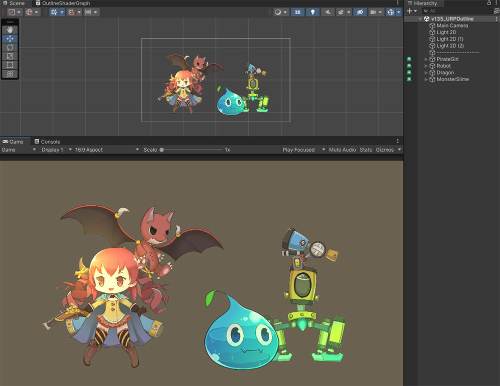
설명을 위해 구성된 씬입니다.
URP 2D Lit 재질이 적용된 4개의 캐릭터들이 배치되어 있습니다.
적용된 재질의 쉐이더를 수정하여 외곽선 쉐이더로 만들어 봅시다.
다음의 링크에서 완성된 쉐이더와 재질을 바로 다운로드하여 이용하실 수 있습니다.
제공되는 파일은 URP 버전이 12.1.1이 아니거나 Unity 2021 버전이 아닌 경우엔 호환되지 않을 수 있습니다.
< 외곽선 쉐이더와 재질 패키지 다운로드하기 >
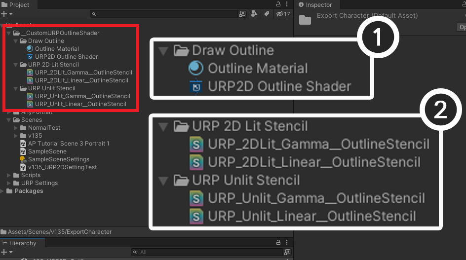
패키지를 다운로드하고 프로젝트에 임포트하면 위와 같이 파일들이 추가됩니다.
(1) 외곽선을 그리는 쉐이더 그래프와 재질입니다. "Outline Material"을 Renderer Data에서 외곽선을 그리는 패스의 재질로서 설정하시면 됩니다.
(2) AnyPortrait 캐릭터에 설정할 스텐실용 쉐이더 에셋들입니다. 각각 URP 2D Lit용과 URP Unlit용, 그리고 Gamma Space와 Linear Space용으로 구분하여 만들었습니다.
위 파일들을 이용한다면 이 페이지의 설명 중 쉐이더를 제작하는 내용은 생략하셔도 됩니다.
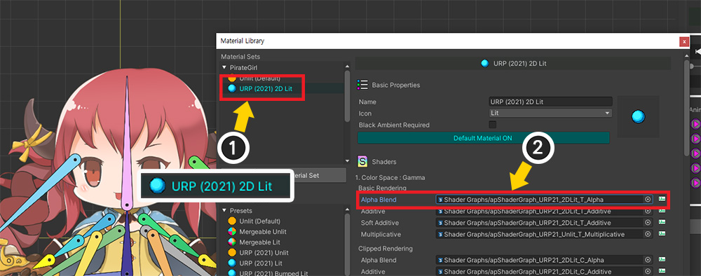
캐릭터를 선택하고 재질 라이브러리를 엽니다.
(1) 현재 적용된 URP용 재질 프리셋을 선택합니다.
(2) 변경해야하는 쉐이더 에셋을 교체할 것입니다.

대상이 되는 쉐이더 에셋들은 다음과 같습니다.
- 프로젝트 환경이 Gamma Color Space라면:
Gamma > Basic Rendering > Alpha Blend의 쉐이더 그래프를 수정 및 교체합니다.
- 프로젝트 환경이 Linear Color Space라면:
Linear > Basic Rendering > Alpha Blend의 쉐이더 그래프를 수정 및 교체합니다.
"Alpha Blend" 외의 재질은 외곽선을 가지지 않으므로, 수정하지 않아도 됩니다.
같은 이유로 Clipped 쉐이더도 수정할 필요가 없습니다.
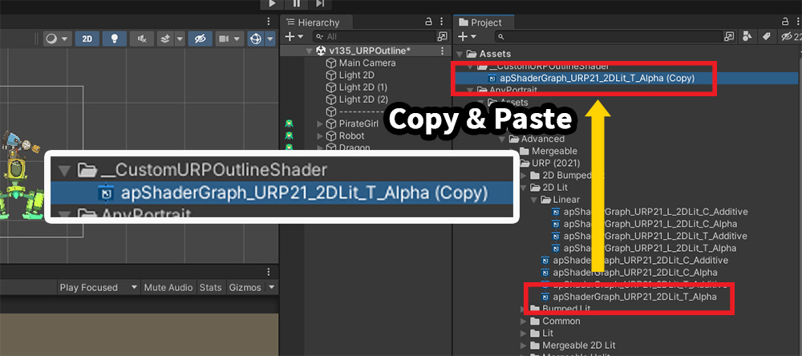
대상이 되는 쉐이더 그래프 에셋을 복사하여 다른 경로에 붙여넣습니다.
이 쉐이더 그래프 에셋은 코드 생성용으로만 사용될 예정입니다.

복사된 쉐이더 그래프 에셋을 엽니다.
(1) + 버튼을 눌러서 Float 타입의 프로퍼티를 추가합니다.
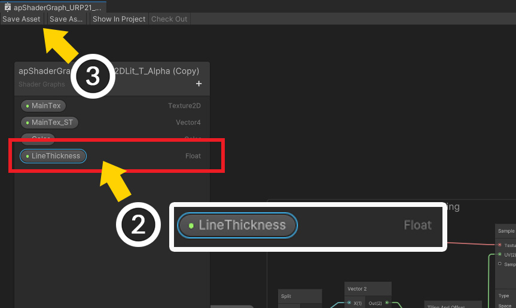
(2) 추가된 프로퍼티의 이름을 "LineThickness"로 설정합니다. (쉐이더 코드상에는 "_LineThickness"로 정의됩니다.)
(3) 쉐이더 그래프를 저장합니다.

(1) 다시 쉐이더 그래프 에셋을 선택합니다.
(2) Inspector에서 "View Generated Shader" 버튼을 누릅니다.
만약 이미 코드가 생성되었다면 Regenerate 버튼을 누른 후에, View Generated Shader 버튼을 누릅니다.

스크립트 에디터가 열리면서 쉐이더 그래프로부터 생성된 쉐이더 코드를 볼 수 있습니다.
이 코드를 이용하여 새로운 쉐이더를 작성할 것입니다.
(1) Ctrl + A 를 눌러서 모든 코드를 선택합니다.
(2) Ctrl + C 를 눌러서 선택된 모든 코드를 복사합니다.

복사된 쉐이더 코드를 붙여넣을 쉐이더 에셋을 새로 생성합니다.
적절한 경로에서 마우스 우클릭을 하여 Create > Shader > Unlit Shader를 눌러서 새로운 쉐이더 에셋을 생성합니다.
이 에셋은 쉐이더 그래프가 아닌 일반 쉐이더 에셋이어야 합니다.
왜 쉐이더 그래프의 코드를 복제하는 방법을 사용하나요?
URP용 쉐이더는 매우 복잡하여 직접 작성하는 것은 거의 불가능합니다.
또한 버전에 따라 코드가 바뀌므로 쉐이더 그래프를 이용하는 것이 정석으로 알려져있습니다.
하지만 쉐이더 그래프에서는 패스(Pass)를 추가하거나 "Light Mode"를 지정하는 작업이 불가능합니다.
따라서, 다소 번거롭더라도, 쉐이더 그래프를 먼저 완성한 후, 여기서 생성된 코드를 복제한 뒤 수정하는 방법이 필요합니다.
만약 쉐이더 그래프가 개선되어 여기서 설명되는 다양한 기법이 적용될 수 있다면, 굳이 코드를 생성하는 방법은 필요없을 것입니다.
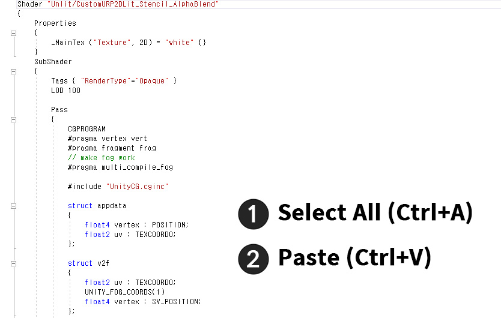
생성된 쉐이더 에셋을 엽니다.
Unlit 방식의 간단한 쉐이더 코드를 볼 수 있습니다.
이 코드를 사용하는 것이 아닌, 현재 클립보드에 저장된 "쉐이더 그래프에서 복사한 코드"를 여기에 붙여넣고 수정해봅니다.
(1) Ctrl + A 를 눌러서 모든 코드를 선택합니다.
(2) Ctrl + V 를 눌러서 클립보드에 저장된 코드를 붙여넣습니다.

(1) 쉐이더 그래프로부터 생성된 임시 코드가 (2) 쉐이더 에셋에 붙여넣은 결과입니다.
당연하게도, 두개의 코드는 완벽히 동일합니다.
이제 쉐이더 에셋을 수정해봅시다.
(이제부터는 쉐이더 그래프 및 쉐이더 그래프에서 생성된 코드는 더이상 사용하지 않습니다.)
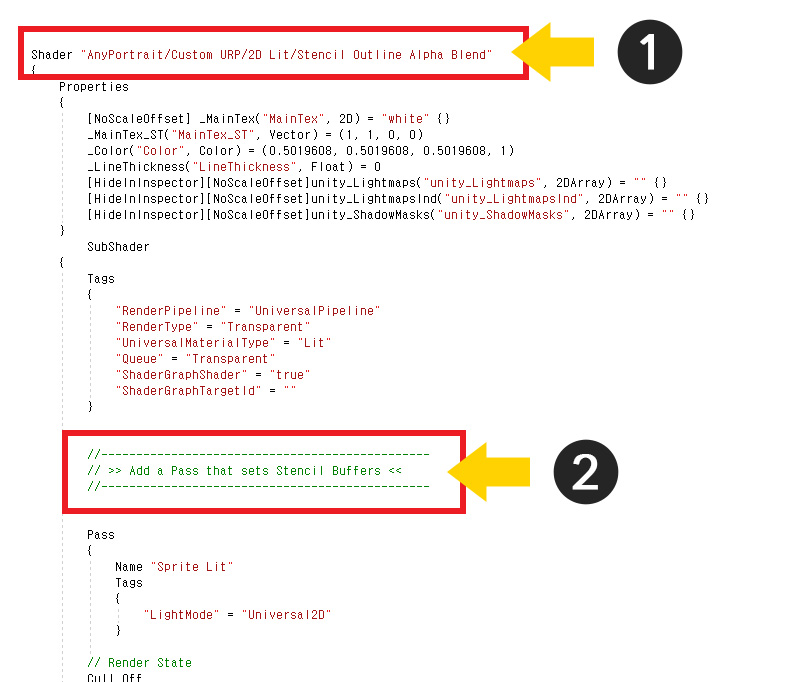
(1) 쉐이더의 이름을 수정합니다.
(2) "SubShader"의 구문 내에 아래의 코드를 작성하여 추가합니다. 위의 이미지에서 가리키는 위치에 추가하면 됩니다.
Pass
{
// 스텐실에 값을 설정하는 패스입니다.
// Renderer Data에서 재질 오버라이드 설정으로 스텐실을 지정할 것이므로, 여기서 스텐실 코드는 작성하지 않았습니다.
// Light Mode의 이름을 이용하여 멀티 패스를 구현합니다.
// "SetStencilPass"라는 이름을 기억해주세요.
Tags { "LightMode" = "SetStencilPass" }
Blend SrcAlpha OneMinusSrcAlpha
// ColorMask를 A로 설정하면 스텐실이 설정되어도 렌더링은 되지 않습니다.
ZWrite Off
ColorMask A
HLSLPROGRAM
#pragma vertex vert
#pragma fragment frag
#include "Packages/com.unity.render-pipelines.universal/ShaderLibrary/Core.hlsl"
struct Attributes
{
float4 positionOS : POSITION;
float2 uv : TEXCOORD0;
};
struct Varyings
{
float4 positionHCS : SV_POSITION;
float2 uv : TEXCOORD0;
};
TEXTURE2D(_MainTex);
SAMPLER(sampler_MainTex);
// 쉐이더의 프로퍼티를 여기에 작성합니다.
// 렌더링 최적화를 위해 "SRP Batcher"를 동작하기 위해서는 다음의 "CBUFFER" 구문이 다른 패스와 동일하게 작성되어야 합니다.
CBUFFER_START(UnityPerMaterial)
float4 _MainTex_TexelSize;
float4 _MainTex_ST;
float4 _Color;
float _LineThickness;
CBUFFER_END
Varyings vert(Attributes IN)
{
Varyings OUT;
OUT.positionHCS = TransformObjectToHClip(IN.positionOS.xyz);
OUT.uv = TRANSFORM_TEX(IN.uv, _MainTex);
return OUT;
}
half4 frag(Varyings IN) : SV_Target
{
// "_LineThickness" 만큼의 거리에 위치한 픽셀의 투명도를 체크합니다.
float offset1 = _LineThickness;
float offset2 = _LineThickness * 0.7f;
float alpha_0 = SAMPLE_TEXTURE2D(_MainTex, sampler_MainTex, IN.uv).a;
// 주변의 8개의 픽셀의 투명도를 체크합니다.
float alpha_1 = SAMPLE_TEXTURE2D(_MainTex, sampler_MainTex, IN.uv + float2(offset1, 0)).a;
float alpha_2 = SAMPLE_TEXTURE2D(_MainTex, sampler_MainTex, IN.uv + float2(-offset1, 0)).a;
float alpha_3 = SAMPLE_TEXTURE2D(_MainTex, sampler_MainTex, IN.uv + float2(0, offset1)).a;
float alpha_4 = SAMPLE_TEXTURE2D(_MainTex, sampler_MainTex, IN.uv + float2(0, -offset1)).a;
float alpha_5 = SAMPLE_TEXTURE2D(_MainTex, sampler_MainTex, IN.uv + float2(offset2, offset2)).a;
float alpha_6 = SAMPLE_TEXTURE2D(_MainTex, sampler_MainTex, IN.uv + float2(-offset2, offset2)).a;
float alpha_7 = SAMPLE_TEXTURE2D(_MainTex, sampler_MainTex, IN.uv + float2(-offset2, -offset2)).a;
float alpha_8 = SAMPLE_TEXTURE2D(_MainTex, sampler_MainTex, IN.uv + float2(offset2, -offset2)).a;
half totalAlpha = alpha_0 + alpha_1 + alpha_2 + alpha_3 + alpha_4 + alpha_5 + alpha_6 + alpha_7 + alpha_8;
float4 c = float4(0, 0, 0, 0);
c.a = saturate(totalAlpha * _Color.a);
// "discard"가 호출되면 스텐실이 갱신되지 않는 점을 이용하여 외곽선인 부분만 스텐실 값이 저장되도록 만듭니다.
// 픽셀이 불투명하면 외곽선이 아닌 이미지 내부에 해당합니다.
if (alpha_0 > 0.5f)
{
discard;
}
// 주변에 불투명한 픽셀이 없다면 외곽선이 아닌 여백에 해당합니다.
if (c.a < 0.02f)
{
discard;
}
return c;
}
ENDHLSL
}
코드의 자세한 설명은 각각의 주석을 참고해주세요.
위의 코드를 쉐이더 코드 내에 추가하면 다음의 이미지처럼 나타날 것입니다.

특히 여기서 주목할 점은 "Light Mode"와 CBUFFER 구문입니다.
(1) URP는 Light Mode를 이용하여 렌더링되는 패스를 구분합니다.
이 특성을 이용하여 캐릭터가 렌더링되기 전에 스텐실을 작성하는 패스를 먼저 실행시키도록 만듭니다.
여기서 작성한 Light Mode의 이름인 "SetStencilPass"을 기억해둡시다.
(2) URP를 포함한 SRP는 렌더링 성능을 높이기 위해서 재질의 특성이 비슷하다면, 적은 드로우콜에서도 가능한 많은 객체들을 렌더링합니다.
이 특성을 "SRP Batcher"라고 합니다.
SRP Batcher가 동작하도록 만들기 위해서는 쉐이더 코드 내의 모든 프로퍼티 구문, 즉 "CBUFFER_START ~ CUBFFER_END" 내의 코드가 동일해야합니다.
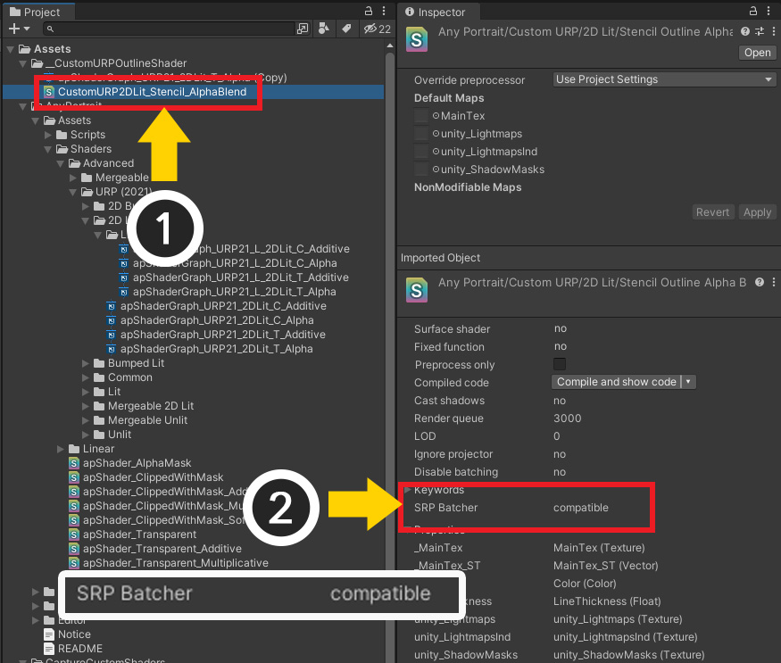
(1) 완성된 쉐이더 에셋을 선택합니다.
(2) 문제가 없이 작성했다면 SRP Batcher 속성이 "compatible"인 것을 볼 수 있습니다.

캐릭터를 열고, 이 쉐이더를 적용해봅시다.
(1) 재질 라이브러리를 열고 이 재질 세트의 이름을 변경합니다.
이름을 변경하는 것은, 이 재질 세트를 프리셋으로 저장하여 다른 캐릭터에도 쉽게 적용하기 위함입니다.
(2) "Alpha Blend" 항목에 앞서 작성한 쉐이더 에셋을 적용합니다.

앞의 과정에서 추가한 프로퍼티인 "_LineThickness"를 지정해봅시다.
(1) Add Property 버튼을 누릅니다.
(2) 이름을 "_LineThickness"로 설정합니다.
(3) 타입은 Float로 설정합니다.
(4) 외곽선 두께는 텍스쳐 좌표계인 UV를 기준으로 하기 때문에 1 이하의 매우 작은 값을 입력합니다.
아직 적절한 값을 모르기 때문에 적당히 작은 값을 입력합니다.
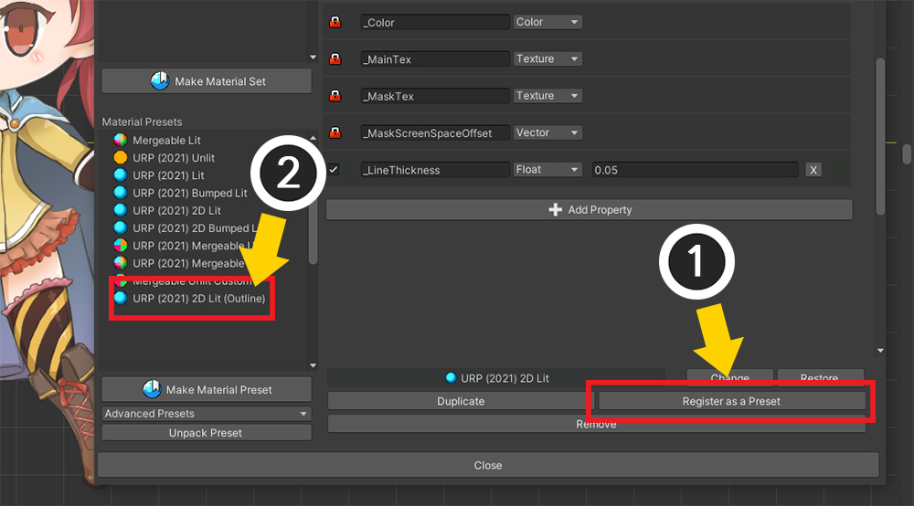
이 재질 세트를 적용하려면 프리셋으로 만들어서 다른 캐릭터에도 빠르게 설정할 수 있습니다.
(1) Register as a Preset 버튼을 누릅니다.
(2) 프리셋으로 추가된 것을 볼 수 있습니다.
AnyPortrait v1.3.5 기준으로, 쉐이더 에셋 변경 직후 프리셋으로 저장하면, 변경 내역이 반영되지 않는 버그가 있습니다.
프리셋으로 저장하기 전에 재질 라이브러리를 껐다가 다시 켜시길 바랍니다.
이 버그는 다음 업데이트에서 수정할 예정입니다.

Bake를 실행합니다.
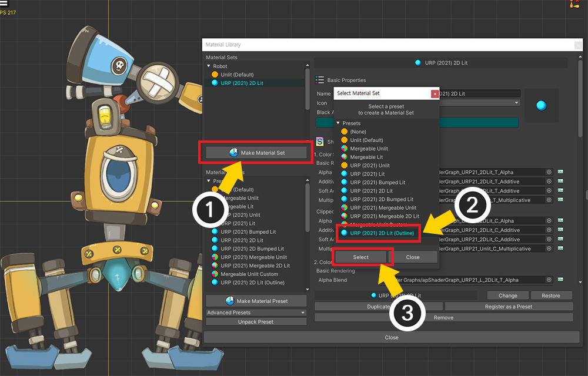
다른 캐릭터에도 동일한 작업을 해야하는데, 저장한 프리셋을 이용하면 번거로운 과정을 줄일 수 있습니다.
다른 캐릭터를 열고 재질 라이브러리를 실행합니다.
(1) Make Material Set 버튼을 눌러서 새로운 재질 세트를 추가합니다.
(2) 위의 과정에서 생성된 외곽선 렌더링을 위한 프리셋을 선택합니다.
(3) Select 버튼을 누릅니다.

(1) 추가된 재질 세트를 선택합니다.
(2) Default Material 버튼을 눌러서 ON 상태로 만듭니다.
(3) 작성한 쉐이더 에셋이 적용된 상태인지 확인합니다.

이 작업을 모든 캐릭터에 동일하게 수행합니다.
외곽선 렌더링 쉐이더를 만들고 렌더러 설정하기
다음 작업은 스텐실을 인식하여 실제로 외곽선 렌더링이 되도록 만드는 것입니다.
꽤 복잡한 단계들을 거치기 때문에 하나씩 따라서 해보시길 바랍니다.
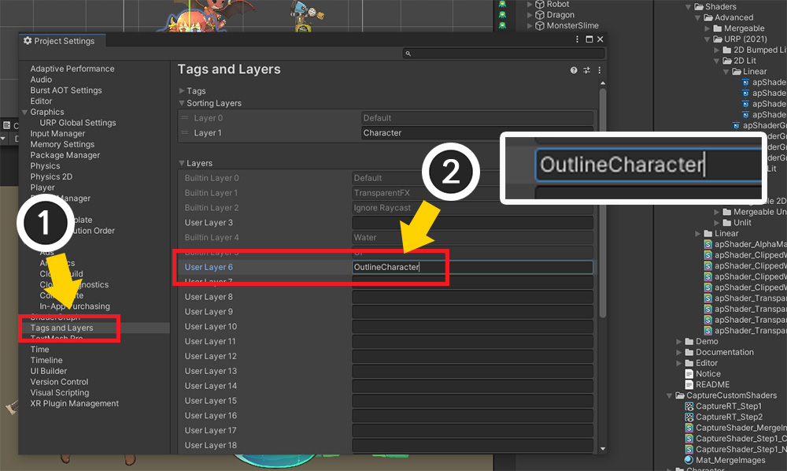
외곽선이 그려질 대상을 구분하기 위해 레이어를 추가합니다.
(1) Project Settings > Tags and Layers를 선택합니다.
(2) Layers에 새로운 레이어를 추가합니다. 여기서는 "OutlineCharacter"라는 이름의 레이어를 추가했습니다.

(1) 캐릭터들을 모두 선택합니다.
(2) 캐릭터들의 레이어를 방금 설정한 "OutlineCharacter"로 변경합니다.
(자식 객체들을 일괄 변경합니다.)
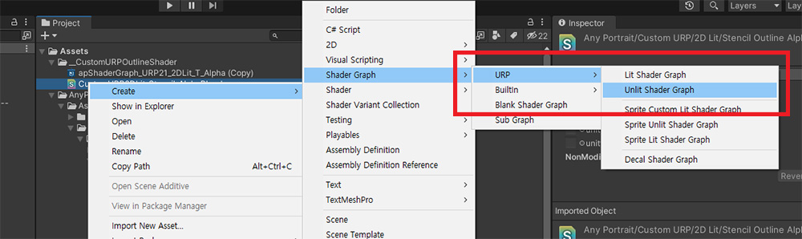
앞선 과정에서 작성한 쉐이더는 외곽선이 될 위치에 스텐실에 저장하는 역할을 합니다.
아직 외곽선을 렌더링하는 쉐이더 및 재질은 만들지 않은 상태입니다.
외곽선을 렌더링하는 쉐이더를 만들어 봅시다.
Projects 탭에서 우클릭을 한 후, Create > Shader Graph > URP > Unlit Shader Graph를 선택하여 새로운 쉐이더 그래프를 만듭니다.
왜 "Sprite Unlit" 쉐이더가 아닌 "Unlit" 쉐이더를 사용하나요?
2D 게임에서, Sprite Unlit 쉐이더는 반투명 렌더링을 지원하며, Unlit 쉐이더는 불투명 렌더링만 지원하기 때문에 일반적으로는 Sprite Unlit 쉐이더를 이용합니다.
하지만 URP에서 외곽선을 그리는 패스는 각각의 객체마다 동작하는 것이 아닌 일괄적으로 동작하기 때문에 외곽선의 렌더링 순서를 제어하지 못하는 문제가 있습니다.
Opaque 쉐이더는 렌더링 패스가 달라도 Z 위치(Depth)를 비교하여 렌더링 순서가 적절히 결정되는 반면, Transparent 쉐이더는 Z 위치를 이용하지 못하기 때문에 렌더링 순서를 제어할 수 없습니다.
결과적으로 Transparent 쉐이더로 외곽선을 일괄 렌더링하게 되면, 항상 모든 객체의 뒤 또는 앞에만 렌더링되게 됩니다.
그래서 Z 위치를 이용하기 위해서 렌더링 품질이 떨어지더라도 Unlit 쉐이더를 이용해야 했습니다.
Sprite Unlit 쉐이더를 이용하기 위해서는 SRP가 객체별로 멀티 패스를 지원하거나, AnyPortrait에서 이를 위한 다중 재질 기능이 추가되어야 하며, 저희는 이러한 점을 사용자 피드백을 통해서 검토하는 중입니다.

(1) 생성된 쉐이더 그래프를 엽니다.
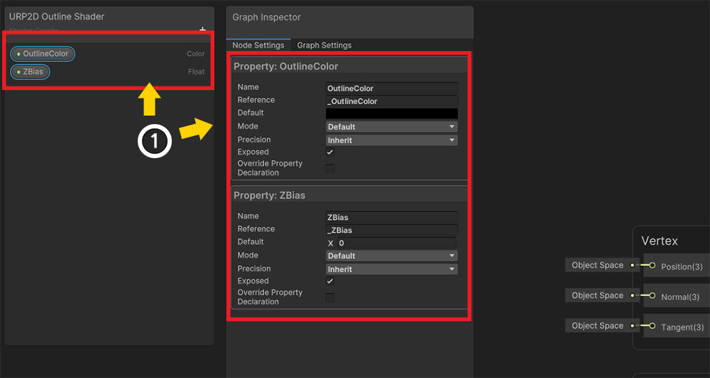
(1) "OutlineColor"라는 이름의 Color 프로퍼티와 "ZBias"라는 이름의 Float 프로퍼티를 추가합니다.
OutlineColor 프로퍼티는 외곽선의 색상을 의미하며, ZBias는 외곽선이 캐릭터보다 조금 뒤에서 렌더링되도록 만듭니다.
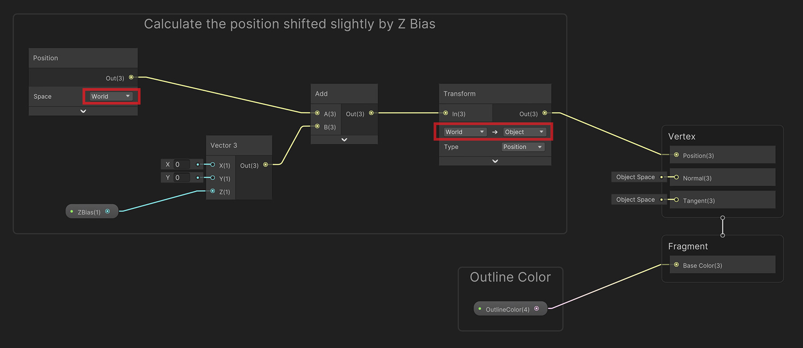
위와 같이 쉐이더 그래프를 작성합니다.
특이한 점은 World 좌표계를 기준으로 ZBias 만큼 렌더링 위치를 뒤로 이동시키는 것입니다.
(새 탭에서 열면 원본 크기의 이미지를 볼 수 있습니다.)
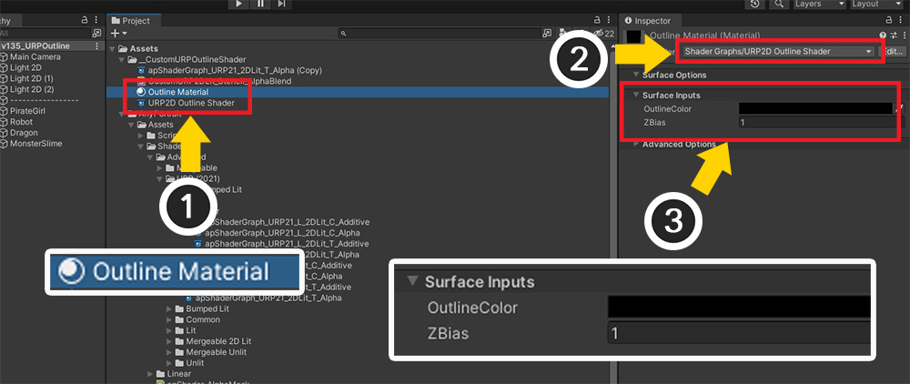
"외곽선 렌더링 패스"에서 이용할 외곽선 재질을 만들어봅시다.
(1) 새로운 재질을 생성하고 선택합니다.
(2) 재질의 쉐이더를 바로 직전에 작성한 외곽선 쉐이더로 변경합니다.
(3) 외곽선 색상 및 ZBias를 설정합니다. 여기서는 ZBias를 1로 설정했습니다.
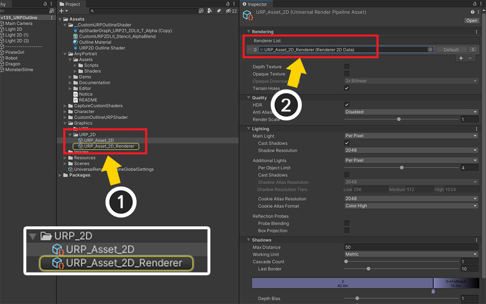
이어서 URP의 Renderer Data를 수정할 단계입니다.
(1) 프로젝트에 적용된 Universal Render Pipeline Asset을 선택합니다.
(2) Renderer List에서 현재 적용된 Renderer Data를 볼 수 있습니다.
이 Renderer Data를 수정하여 특수한 렌더링 패스를 추가해봅시다.
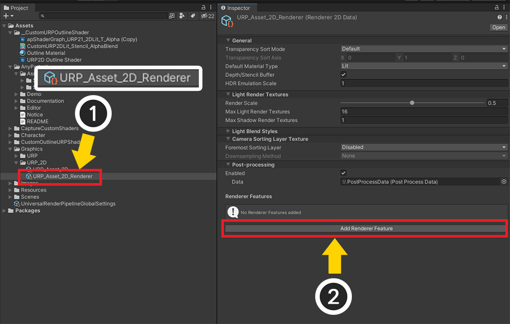
(1) 현재 적용된 Renderer Data를 선택합니다.
(2) Add Renderer Feature 버튼을 누릅니다.

(3) Render Objects를 선택하여 추가합니다.

추가된 Render Objects에 "외곽선에 해당하는 영역에 스텐실 설정하기"의 역할을 부여해봅시다.
위와 같이 설정합니다.
(1) 이름을 적절히 설정한 후, Event를 BeforeRenderingOpaques로 설정합니다.
불투명 메시들이 그려지기 전에, 외곽선 영역에 스텐실을 설정하기 위함입니다.
이벤트의 이름들이 대부분 비슷하여 헷갈리기 쉬우니 주의하시길 바랍니다.
(2) Queue는 Transparent로 설정하고, Layer Mask의 값은 앞서 설정했던 "OutlineCharacter"로 변경합니다.
이제 AnyPortrait 캐릭터들에 대해서 이 렌더링 이벤트가 동작할 것입니다.
(3) LightMode Tags에서 + 버튼을 누르고, "SetStencilPass"를 입력합니다.
위에서 작성했던 쉐이더의 코드에서 등장한 "SetStencilPass"가 여기서 사용되는 것입니다.
(4) 외곽선 영역에 스텐실을 설정하기 위해서 Overrides 항목을 열고 다음과 같이 설정합니다.
- Stencil을 활성화합니다.
- Value는 0이 아닌 값을 지정합니다. 여기서는 "5"로 설정했으며 아래의 Stencil 속성에서도 동일하게 설정해야합니다.
- Compare Function는 Always로 설정합니다.
- Pass를 Replace로 설정합니다.
이제 외곽선이 그려질 위치의 스텐실에는 "5"라는 값이 쓰여질 것입니다.
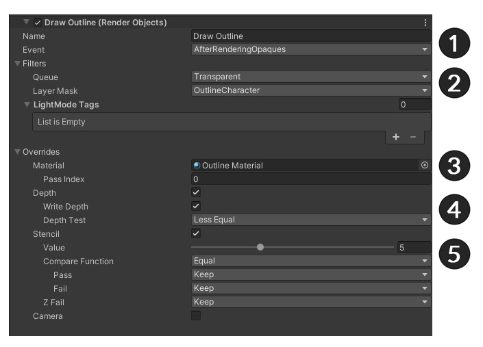
동일한 방식으로 Add Render Feature 버튼을 누르고 Render Object를 하나 더 추가합니다.
이 렌더링 이벤트는 "스텐실을 인식하여 외곽선을 그리기"의 역할을 수행합니다.
(1) 이름을 적절히 설정한 후, Event를 AfterRenderingOpaques로 설정합니다.
다른 불투명 메시들이 그려진 후에, 외곽선를 그리고자 하기 위함입니다.
(2) Queue를 Transparent로 설정하고 Layer Mask의 값을 "OutlineCharacter"로 설정하여 스텐실을 인식할 준비를 합니다.
(3) Overrides를 열고 Material에 앞서 만든 "외곽선 재질"을 여기에 설정합니다.
이제 이 렌더링 패스가 동작할 때는 캐릭터의 재질이 아닌, 외곽선 재질이 대신 사용될 것입니다.
(4) Depth, Write Depth를 활성화하고 Depth Test는 기본값인 Less Equal로 설정합니다.
Depth Test를 하면 픽셀 단위로 외곽선이 다른 객체에 가려질지 여부가 결정됩니다.
(5) 먼저 동작하는 렌더링 이벤트에서 작성된 스텐실 값을 인식하여, 해당 부분만 렌더링하도록 설정합니다.
- Stencil을 활성화합니다.
- Value를 앞에서 설정한 값(여기서는 "5")과 같은 값으로 설정합니다.
- Compare Function을 Equal로 설정합니다.
- Pass, Fail을 모두 Keep으로 설정합니다.

설정이 모두 완료되었다면, 위와 같은 결과를 볼 수 있습니다.
다소 거칠지만 외곽선이 보여질 것입니다.
외곽선 굵기 보정하기
외곽선이 렌더링되긴 하지만 아직 원하는 결과는 나오지 않습니다.
외곽선의 두께나 메시의 형태를 변경하여 결과를 보정해봅시다.

캐릭터를 선택하여 재질 라이브러리를 엽니다.
(1) _LineThickness의 값을 조절하여 외곽선의 굵기를 적절하게 수정합니다.
이 값은 UV 좌표계를 기준으로 하기 때문에 텍스쳐의 크기에 따라 적절한 값의 범위가 다릅니다.

외곽선의 굵기를 수정하니 꽤 예쁜 결과가 나타났습니다.

만약 위와 같이 메시에 여백이 거의 없어서 외곽선이 그려질 공간이 없을 수 있습니다.
이때는 메시를 수정해야합니다.
(가능하다면 애니메이션을 만들기 전에 미리 수정해두는 것을 권장합니다.)

위와 같이 외곽선이 그려질 수 있도록 메시를 수정합니다.

이제 외곽선이 정상적으로 그려지는 것을 볼 수 있습니다.

외곽선이 적절히 보정된 결과입니다.
외곽선 재질 설정에 따른 결과
외곽선 재질는 "OutlineColor", "ZBias" 프로퍼티를 가지고 있습니다.
이 프로퍼티에 따라 결과가 어떻게 바뀌는지 확인해봅시다.

(1) 외곽선 재질을 선택합니다.
(2) OutlineColor를 붉은색으로 변경해보았습니다.
(3) 외곽선의 색상이 붉은색으로 바뀌는 것을 볼 수 있습니다.
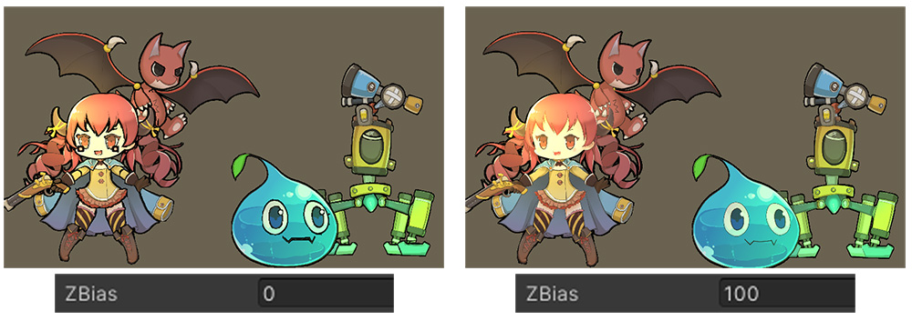
다음으로 ZBias에 따른 결과입니다.
ZBias 값이 너무 작다면 외곽선이 캐릭터의 메시들과 가까운 곳에서 그려질 것입니다.
이 경우엔 캐릭터 내부의 메시들 사이에서도 나타나는 문제가 발생합니다.
ZBias 값이 너무 크다면 외곽선이 캐릭터 메시들로부터 먼 거리의 뒤에서 그려집니다.
이 경우엔 외곽선이 캐릭터들 사이에서는 나타나지 않는 문제가 발생합니다.
실제로 캐릭터들을 배치해보고 ZBias를 적절히 설정하시면 되겠습니다.
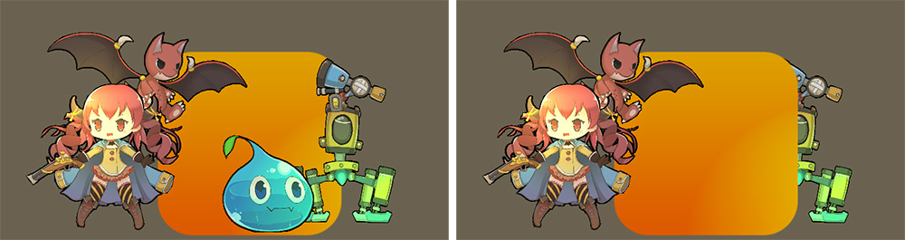
외곽선은 불투명 재질로서 오직 Z 위치를 기준으로 렌더링 여부가 결정됩니다.
이 특성은 다른 메시와 같이 렌더링 될때도 외곽선이 항상 숨겨지거나 또는 항상 보여지는 문제를 방지하는 장점이 있습니다.

하지만 다른 객체의 Z 위치가 캐릭터와 매우 가깝다면, "캐릭터는 보여지지만 외곽선은 보이지 않는 상태"가 있을 수 있습니다.
캐릭터와 객체들의 Z 위치를 적절히 지정하실 것을 권장합니다.
멀티 패스 렌더링에 따른 렌더링 과정
멀티 패스 렌더링 기법은 렌더링 성능을 크게 떨어트리는 문제를 가집니다.
하지만 URP를 포함한 SRP의 최적화 기능(SRP Batcher)이 제대로 동작한다면, 그 부담을 다소 줄일 수 있습니다.
렌더링이 어떻게 처리되는지 상세히 확인해봅시다.

유니티의 "프레임 디버거 (Frame Debugger)"를 실행합니다.
(1) 외곽선을 포함한 URP의 렌더링 과정을 볼 수 있습니다.
(2) 스텐실이 설정되는 과정입니다. 1회의 SRP Batch만 기록된 것을 볼 수 있습니다.
(3) 스텐실을 인식하여 외곽선을 그리는 과정입니다. 마찬가지로 1회의 SRP Batch가 기록되었습니다.
(4) 캐릭터 메시들이 실제로 그려지는 과정입니다.
SRP Batcher가 동작한다면, 스텐실 설정 및 외곽선 그리기 과정이 총 2회의 SRP Batch만 동작하여 수행됩니다.
그리기 횟수가 많지 않은 만큼 최적화만 잘 한다면 렌더링 성능에 대한 부담이 크지 않은 것을 알 수 있습니다.

위 이미지는 렌더링 과정을 하나씩 보여줍니다.
1. 스텐실을 설정하는 단계에서는 1회의 렌더링 과정을 거치지만 실제로 그려지는 것은 없습니다.
2. 모든 캐릭터들의 외곽선이 한번에 그려집니다.
3. 몇번의 렌더링을 거쳐서 캐릭터 렌더링이 완료됩니다.